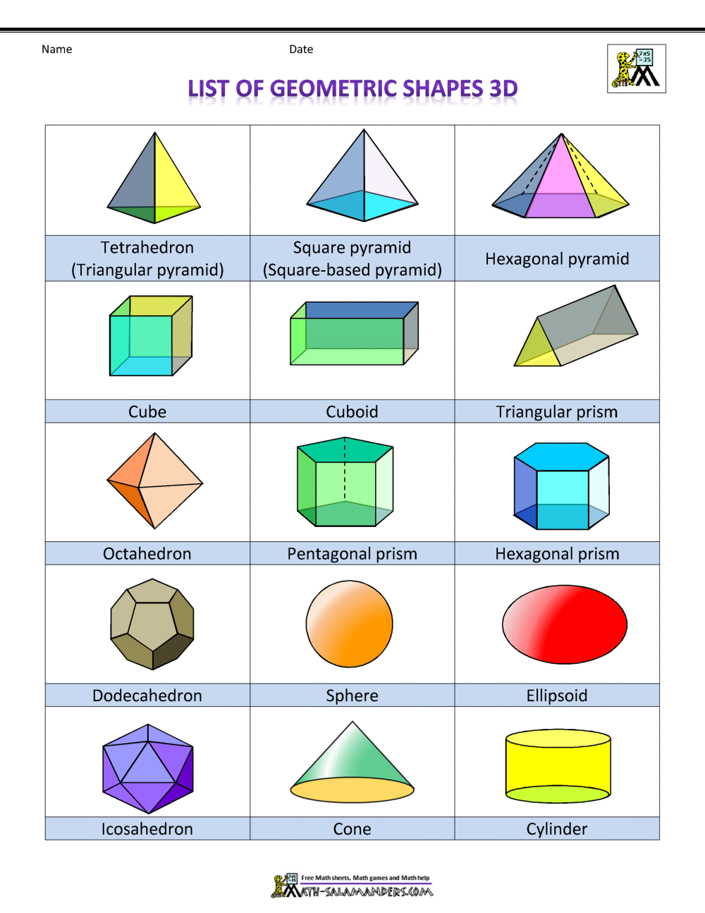

Enamel loss = erosion or attrition or abrasion or fracture or caries
Enamel loss = erosion or attrition or abrasion or fracture or cariesMedicine, as practiced today, relies heavily on natural language, visual patterns, and human judgment. While this has served us well, it introduces several limitations:
As medicine becomes increasingly data-rich and patient-specific, these limitations hinder precision, reproducibility, and automation—especially in an era of AI and personalized healthcare.
To transcend these barriers, we propose a paradigm shift called medicine as pure math which Translate medicine into mathematics.
By representing each domain of medicine through precise computational models, we gain:
Medical reasoning follows a structured progression from understanding normal form and function to identifying deviations and planning interventions. This process can be mapped to computational models for enhanced simulation, diagnostics, and AI integration. The foundation lies in Anatomy, which describes the physical structures of the body. These are inherently spatial and are best represented using geometry and coordinate systems, enabling precise modeling of size, shape, and location—critical for imaging analysis and surgical planning. Upon this structure, Physiology describes how these components function over time. Biological processes such as circulation or neural activity are dynamic and regulated, making dynamical systems and control theory ideal for capturing their behavior through equations, signals, and feedback loops.
When physiological functions fail, Pathology emerges. These failures often follow cascading cause-effect patterns, making logic circuits, Boolean models, and fault trees suitable for tracing disease mechanisms from genetic mutations to cellular damage. Recognizing such pathological states requires Diagnosis, a reasoning task under uncertainty. This is modeled effectively through symbolic logic and probabilistic inference, using rule-based systems, decision trees, and Bayesian networks to mirror clinical thought. Once a diagnosis is reached, Treatment Planning involves choosing the best course of action—balancing efficacy, cost, side effects, and patient compliance. This decision-making process can be captured through algorithms, optimization methods, and game theory, reflecting the complexity of real-world constraints and stakeholder interactions.
By aligning each step of the clinical process with appropriate computational models, we can construct a unified, logical framework for medicine—enabling AI-driven decision support, simulations, and personalized care.
Actually,these calculations made by doctor cognitive skills from his knowledge as we do multiplication in mind from known multiples. so to get solution and to prove, we use paper as like my theory method is used on paper to solve patient and The calculator is my software
It is how Newton’s laws for physics Periodic table for chemistry Wellmap For medicine
9 - Encode
Patient Data
> Structure signs, symptoms, and findings into logical sets.
(Set Theory)
10
- Handle Data Uncertainty and Incompleteness
> Account for missing, noisy, or contradictory clinical
information.
(Probability Theory)
11 -
Compare with Known Patterns
> Match patient presentation with known disease models.
(Vector Space Model)
12 -
Generate Probabilistic Outcomes
> Calculate probabilities for each possible diagnosis.
(Bayesian Inference)
13
- Apply Logical Rules and Heuristic Shortcuts
> Combine formal rules and quick heuristic patterns (“clinical
intuition”).
(Logic)
14
- Compute Diagnostic Function
> Integrate all data into a final working diagnosis.
(Function Mapping)
Anatomical Abstraction
Principle: Biological structures can be simplified into geometric representations.
Objective: To model organs and body parts (e.g., teeth, layers) in a format suitable for computational analysis.
Method: Geometry
Anatomy is essential

How voulme caluclated
Tetrahedral = volume
Remaining shapes volume
Remaining Organs mapping
Oesophagus= cylinder Stomach = eclipse Tooth molar
Objective: Represent the human body using geometric primitives (e.g., spheres, cylinders, polygons). Method: Geometry This enables precise spatial modeling of body parts and their topological relationships.
Dentition ##### molars Let assume molar it looks like cube divided into thirds as 3x3x3
Let assume incisior as right angled prism triangle

Anatomical Landmarks
<img src="./assets/cube.jpg" alt="molar geometry" width="150"/>
<p>Molar Geometry</p><img src="./assets/right%20angle%20prism.jpg" alt="incisor geometry" width="150"/>
<p>Incisor Geometry</p>Objective: Assign 3D coordinates (x, y, z) to each anatomical structure. Method: coordinate geometry This provides the foundation for tracking anatomical states and disease propagation over time (t).
Understood! Here’s your original anatomical coordinate system with gingiva (200-series) explicitly mapped around the tooth, keeping the pulp as (0,0,0) and tissue codes intact:
| Code | Tissue | Relative to Tooth |
|---|---|---|
000 |
Pulp | Core (0,0,0) |
001 |
Enamel | Outer crown |
200 |
Gingiva | Surrounding soft tissue |
201 |
Marginal Gingiva | Gum line (cervical) |
202 |
Lateral PDL | Periodontal ligament (root) |
002 |
Apical PDL | Periodontal ligament (root) |
203 |
Alveolar Bone | Socket bone (apical/lateral) |
(x,y,z,t)
Function:
Outer defensive barrier—guards against physical, chemical, and thermal
insults.
G(s) = Resistance / Stimulus Intensity
Closed-loop system where disturbances are automatically or externally corrected.
PID Tuning:
- Caries: High P, low I
- Fracture: High D
Goal:
Return system to homeostasis via negative feedback
dominance.
Function:
Anchors tooth and cushions mechanical load.
Dynamic stabilizer system—adapts under load, destabilizes under inflammation.
| Tooth Structure | Input Stimulus | Transfer Function/Response | Output Symptom | Feedback Mechanism |
|---|---|---|---|---|
| Enamel | Acidic pH, mechanical abrasion | Passive barrier, mineral dissolution | Demineralization, exposure of dentin | Remineralization (saliva), fluoride therapy |
| Dentin | Thermal, osmotic, tactile stimuli | Tubular fluid movement → neural signal transmission | Sharp pain (hypersensitivity) | Tubule occlusion, desensitizing agents |
| Pulp | Bacterial toxins, trauma, deep caries | Inflammatory cascade, nociception | Pulpitis, necrosis, swelling | Immune response, endodontic treatment |
| Periodontal Ligament (PDL) | Occlusal load (vertical/lateral), infection | Mechanotransduction, inflammation | Pain on percussion, mobility | Occlusal adjustment, periodontal therapy |
| Alveolar Bone | Mechanical stress, cytokines from infection | Bone remodeling or resorption | Bone loss, tooth loosening | Bone grafting, load redistribution |
| Cementum | Functional stress, repair signals | Apposition/resorption processes | Root resorption, hypercementosis | Scaling/root planing, regenerative techniques |
| Gingiva | Plaque biofilm, trauma | Immune/inflammatory response | Gingivitis, bleeding, recession | Oral hygiene, surgical intervention |
Model how pathology spreads across time and systems. (Causal Inference)
Objective: Map how the disruption affects other systems and structures. Method: Causal Mechanism Modeling (Cause-Effect Chains) This models the pathophysiological cascade.
Pathology follows anatomy and physiology
Flowchart lattice logic circuits
Enamel loss = erosion or attrition or abrasion or fracture or caries
If then = -> Or = join And = meet
Enamel loss and sensitivity and pulpitis and periapical peridontisis and abscess
gingivitis and periodontitis
and comes when there is anatomical change
Tooth Structures as Control Systems
Legend:
→ = Causal arrow (output depends on input)
⟲ = Feedback loop
[ ] = Component/State
AND, OR, NOT = Logical conditions
+, - = Positive or Negative Feedback
PDL Control Logic:
Inputs:
[Orthodontic Force] → [PDL Remodeling] ⟲ Adaptive Negative Feedback
[Bacterial Plaque] → [Inflammation] → [Collagen Breakdown]
Positive Feedback Loop:
[Inflammation] → [Tissue Breakdown] → [More Bacterial Invasion] → [Bone Loss]
Output Conditions:
IF [Chronic Load] AND [Infection] → THEN [Tooth Mobility] AND [Bone Loss]
gingiva
So, the necessary sequence would be: Swollen and bleeding → Pocket formation ± Recession → Deepened pockets & infection → Mobility
graph TD;
%% Endo Lesion Scale
E0[E0 = enamel loss] --> E1[E1 = Reversible Pulpitis];
E1[E1 = Reversible Pulpitis] --> E1.5[E1.5 = Irreversible Pulpitis];
E1.5 --> E2[E2 = Pulp Necrosis];
E2 --> E2.5[E2.5 = Apical Periodontitis];
E2.5 --> E3[E3 = Apical Abscess];
E3 --> E4[E4 = periapical abdcess];
E3 --> P3
%% Perio Lesion Scale
P1[P1 = Gingivitis] --> P1.5[P1.5 = Early Periodontitis];
P1.5 --> P2[P2 = Moderate Periodontitis];
P2 --> P2.5[P2.5 = Advanced Periodontitis];
P2.5 --> P3[P3 = Severe Periodontitis];
P3 --> P4[P4 = peridontal abcess];
P3 --> E3
State 1 (Healthy): Normal enamel with no visible wear.
State 2 (Mild Attrition): Early wear on occlusal surfaces, enamel slightly thinner.
State 3 (Moderate Attrition): Flattened cusps, exposed dentin, secondary dentin forming.
State 4 (Severe Attrition): Significant wear, pulp exposure, sensitivity.
State 5 (Pulpal Inflammation/Death): Necrosis of the pulp, resulting in tooth loss
Let be the set of all disease states:
D = {E0, E1, E1.5, E2, E2.5, E3, E4, P1, P1.5, P2, P2.5, P3, P4}
Define the ordering between disease states (e.g., E0 < E1 < E1.5 < E2 < E2.5 < E3 < E4, etc.).
Model how diseases evolve over time (acute → chronic transitions). (Markov Chains)
Markov chains model the progression of disease states over time. - State Space: Defines all possible disease states (e.g., E0, E1, E1.5, etc.). - Transition Matrix: Contains probabilities of transitioning from one state to another. - Memoryless Property: The probability of the next state depends only on the current state.
You can now assign probabilities to each transition to build a stochastic model:
E.g., P(E1.5 | E1) = 0.6 (60% chance reversible pulpitis progresses to irreversible pulpitis).
Weights

Define fuzzy boundaries between healthy and pathological zones. (Fuzzy Logic)
Fuzzy logic handles uncertainty and gradients in disease spread. - Fuzzy Set: Each disease state is a fuzzy set with membership functions. - Membership Function: Quantifies the likelihood of a symptom being associated with a disease state. - Fuzzy Rule Base: Rules that map symptoms to disease states with probabilities. - Fuzzy Inference: Defuzzification process gives crisp results from fuzzy rules.
Here’s a detailed, structured, and clear version of your fuzzy logic in medical diagnostics explanation, formatted in Markdown with precise mathematical notation and explanations:
Example:
\[ \mu_{\text{Pain}}(E1.5) = 0.7, \quad \mu_{\text{Pain}}(E2) = 0.2 \]
IF-THEN rules combine symptoms to infer disease
likelihood.
Example Rule:
\[
\text{IF (Pain = High) AND (Swelling = Present) THEN (E3 = 0.8, P3 =
0.6)}
\]
Objective: Convert symptoms, findings, and test results into formal sets. Method: Set-Theoretic Modeling Prepares structured data for comparison
Each disease is defined as a set of features (symptoms, signs, tests).
Example:
Let:
All unique features set = {enamel loss, pain, tender on percussion}
Here the pattern of disease is enamel loss subset -> pain subset tender on percussion Which helps the pattern from cassette
And physiology tells whether it is pain or tender on percussion symptom type
Pathology helps in pattern and physiology helps in type of symptom which makes data collection
cos(A, B) = (A • B) / (||A|| * ||B||)
A • B = Dot product (number of overlapping
features)||A|| = Square root of number of features present| Disease | Cosine Similarity |
|---|---|
| Pulpitis | 1.000 |
| Periapical periodontitis | 0.816 |
| Caries | 0.707 |
Objective: Rank possible diagnoses based on likelihood. Method: Bayesian Modeling Assigns posterior probabilities to differential diagnoses.
Diseases and Their Features:
Caries = {enamel loss}
Pulpitis = {enamel loss, pain}
Periapical periodontitis = {enamel loss, pain, tender on percussion}
Step 1: Assign basic probabilities (guesses)
How common the diseases are (called priors):
Caries = 50% chance
Pulpitis = 30%
Periapical periodontitis = 20%
Step 2: Likelihood of symptoms in each disease
We calculate how likely the patient’s symptoms (enamel loss + pain) are in each disease:
Step 3: Multiply with priors
This gives us the raw scores:
Step 4: Normalize (Divide each score by total = 0.05+0.27+0.18 = 0.5)
Now we get final probabilities:
Final Answer:
Pulpitis is most likely (54%) Then Periapical periodontitis (36%) Then Caries (10%)
If you use likelihood from statical data like epidemiology
Update probabilities based on new evidence.
Diseases:
Caries = {enamel loss}
Pulpitis = {enamel loss, pain}
Periapical periodontitis = {enamel loss, pain, tender on percussion}
P(Caries) = 0.5
P(Pulpitis) = 0.3
P(Periapical periodontitis) = 0.2
Caries: 0.1 × 0.5 = 0.05
Pulpitis: 0.9 × 0.3 = 0.27
Periapical periodontitis: 0.9 × 0.2 = 0.18
Denominator (Total probability of symptoms): 0.05 + 0.27 + 0.18 = 0.50
Diagnosis Ranking:
Pulpitis (54%)
Periapical periodontitis (36%)
Caries (10%)
Bayes’ Rule:
P(Disease | Symptom) = [P(Symptom | Disease) × P(Disease)] / P(Symptom)
Useful for ranking differential diagnoses.
While Bayesian or cosine methods give probabilities or scores, logical rules act like a filter — confirming or rejecting based on exact feature matching.
Great follow-up, Sri Ram! Let’s now represent symbolic reasoning mathematically using formal logic (also called propositional logic). Here’s how:
Define Propositions (Symptoms as variables)
Let:
E = enamel loss
P = pain
T = tender on percussion
Patient Input as a Logical State
Given:
Patient = {E = true, P = true, T = false}
We evaluate which logical rules are satisfied:
Result (Set of Triggered Diagnoses)
Diagnoses = {Caries, Pulpitis}
Among these, Pulpitis is more specific (includes more conditions), so it becomes the most likely under symbolic reasoning.
Mathematical Definition of Specificity
We define each disease as a set of required features (symptoms/signs/tests):
Caries = {E}
Pulpitis = {E, P}
Periapical = {E, P, T}
Let’s define a specificity score:
specificity(D) = |Features(D)|
i.e., count the number of required features
So:
specificity(Pulpitis) = 2 > specificity(Caries) = 1
Therefore, Pulpitis is more specific than Caries.
Would you like to extend this into an algorithm that always chooses the most specific matching disease?
Output:
A ranked list of diseases, where the top result is the most likely diagnosis.
Utility = (Success × Durability) / Cost.adjust the formula or add additional variables (e.g., pain tolerance, insurance coverage)?
Objective: Adjust diagnosis/treatment based on new data. Method: Dynamic Adjustment using Recurrent Feedback Supports real-time decision refinement.
(0,0,2), switch from RCT to
extraction.target = inferior alveolar nerve @ (2,3,-1)).drill path = (0,1,0)→(0,0,0)).clear zone (0,0,0)).taper = 0.05mm/mm).fill volume = πr²h).crown geometry = offset 1mm from original).Utility = (Success × Durability) / Cost.adjust the formula or add additional variables (e.g., pain tolerance, insurance coverage)?
Phase 1. Diagnosis:
- Disease zone: (0,0,1) = abscess (via CT scan).
- Symptoms: S = {pain, swelling, radiolucency}.
- Confirmed: Apical periodontitis (symbolic logic).
Phase 2. Treatment Plan:
- Algorithm: RCT (clear (0,0,0) to
(0,0,2)).
- Optimization: RCT (score 0.6) > extraction (score
0.9, but patient declines).
- Game Theory: Patient agrees to RCT after dentist
explains long-term benefits.
Phase 3. Outcome:
- 6-month check: Bone regeneration at (0,0,1) =
success.